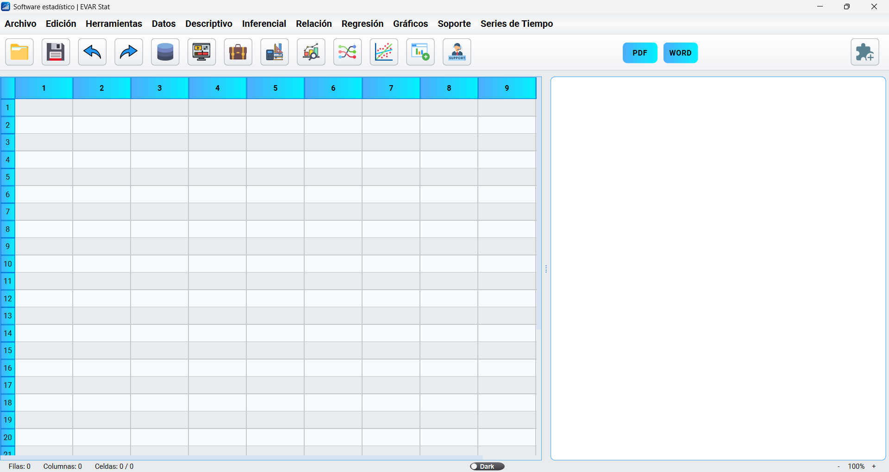
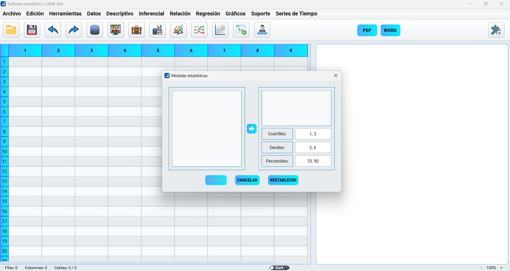
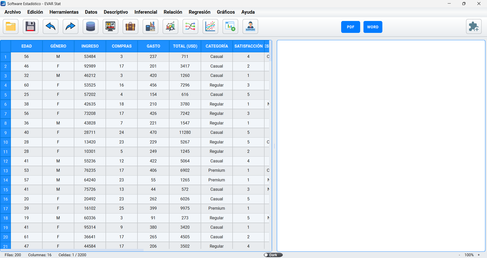
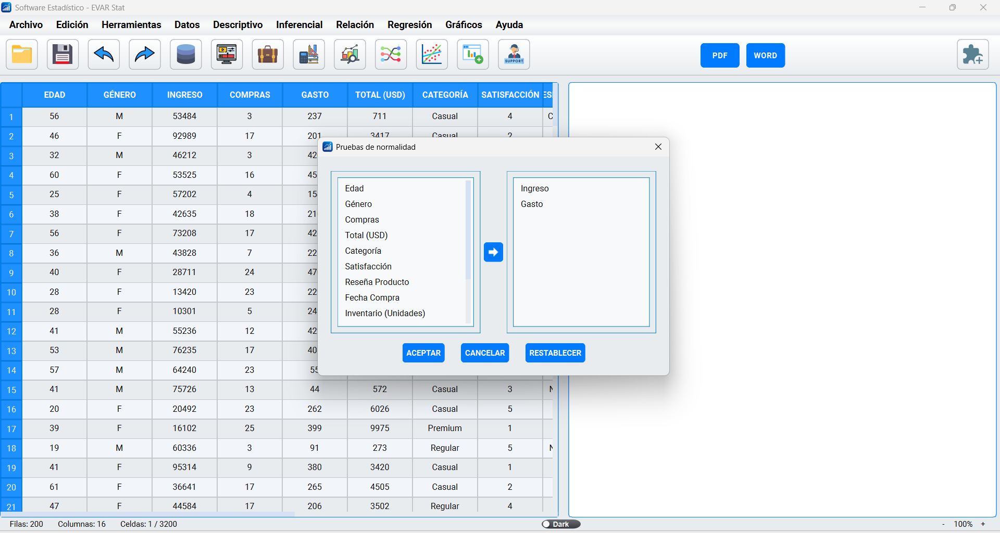
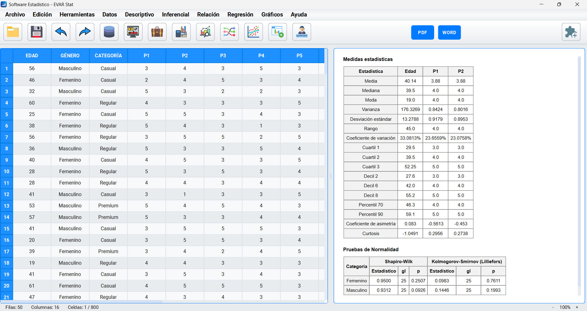
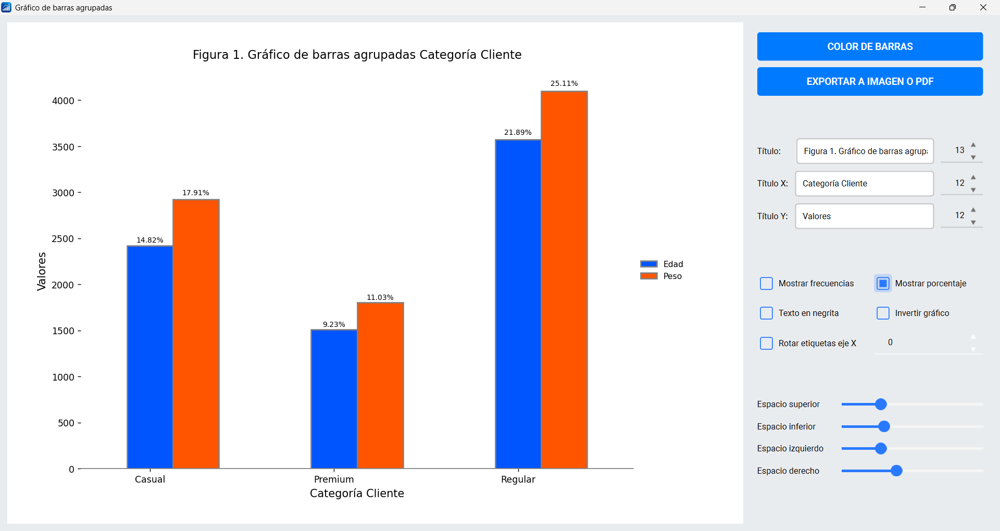

Manipula tus datos fácilmente como en una hoja de cálculo, importa, exporta, edita y transforma de manera intuitiva y rápida.
Realiza análisis descriptivos, inferenciales, correlaciones, regresiones y más, con menús claros y accesibles.
Crea gráficos modernos y personalizables para visualizar tendencias, relaciones y resultados de forma clara y atractiva.
Exporta tus resultados listos para publicar en PDF o Word, conservando un formato y presentación profesional.
Amplía las capacidades del software integrando módulos desarrollados en Python, adaptandolo a tus necesidades.
Disfruta de una interfaz disponible en varios idiomas y personaliza el aspecto en modo claro y oscuro para mayor comodidad visual.






Descarga plugins desarrollados por la comunidad o contribuye con los tuyos en nuestro repositorio.